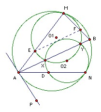

The circles C1 and C2 lie inside the circle C, and are tangent to it at M and N, respectively. C1 passes through the center of C2. The common chord of C1 and C2, when extended, meets C at A and B. The lines MA and MB meet C1 again at E and F. Prove that the line EF is tangent to C2.
Solution
Solution by Jean-Pierre Ehrmann
Let O, O1, O2 and r, r1, r2 be the centers and radii of C, C1, C2 respectively. Let EF meet the line O1O2 at W, and let O2W = x. We need to prove that x = r2.
Take rectangular coordinates with origin O2, x-axis O2O1, and let O have coordinates (a, b). Notice that O and M do not, in general, lie on O1O2. Let AB meet the line O1O2 at V.
We observe first that O2V = r22/(2 r1). [For example, let X be a point of intersection of C1 and C2 and let Y be the midpoint of O2X. Then O1YO2 and XVO2 are similar. Hence, O2V/O2X = O2Y/O2O1.]
An expansion (or, to be technical, a homothecy) center M, factor r/r1 takes O1 to O and EF to AB. Hence EF is perpendicular to O1O2. Also the distance of O1 from EF is r1/r times the distance of O from AB, so (r1 - x) = r1/r (a - r22/(2 r1) ) (*).
We now need to find a. We can get two equations for a and b by looking at the distances of O from O1 and O2. We have:
(r - r1)2 = (r1 - a)2 + b2, and
(r - r2)2 = a2 + b2.
Subtracting to eliminate b, we get a = r22/(2 r1) + r - r r2/r1. Substituting back in (*), we get x = r2, as required.
Alternative solution by Marcin Kuczma, communicated Arne Smeets

Let C1 and C2 meet at X and Y, and let AN meet C2 again at D. Then AE·AM = AX·AY = AD·AN, so triangles AED and ANM are similar. Hence ∠ADE = ∠AMN.
Take the tangent AP as shown. Then ∠PAN = ∠AMN = ∠ADE, so AP and DE are parallel. The homothecy center M mapping C to C1 takes the line AP to the line ED, so ED is tangent to C1 at E. A similar argument show that it is tangent to C2 at D. The homothecy takes AB to EF, so EF is perpendicular to O1O2 (the line of centers). Hence O2EF is isosceles. So angle O2EF = angle O2FE = angle DEO2 (DE tangent). In other words, O2E bisects angle DEF. But ED is tangent to C2, so EF is also.

© John Scholes
jscholes@kalva.demon.co.uk
7 Sep 1999
Last corrected/updated 19 Aug 03